个人云盘 · iPhone / iPad / Mac
你的文件，
就在你自己的桶里
孤云是一款连接你自己对象存储的文件管理器——阿里云 OSS、腾讯云 COS、Cloudflare R2、 Backblaze B2、MinIO，或任何 S3 兼容服务。桶是你的、密钥是你的、账单也是你自己的： 没有账号体系，没有我们的服务器，也没有遥测，文件从这台设备直达你自己的桶。
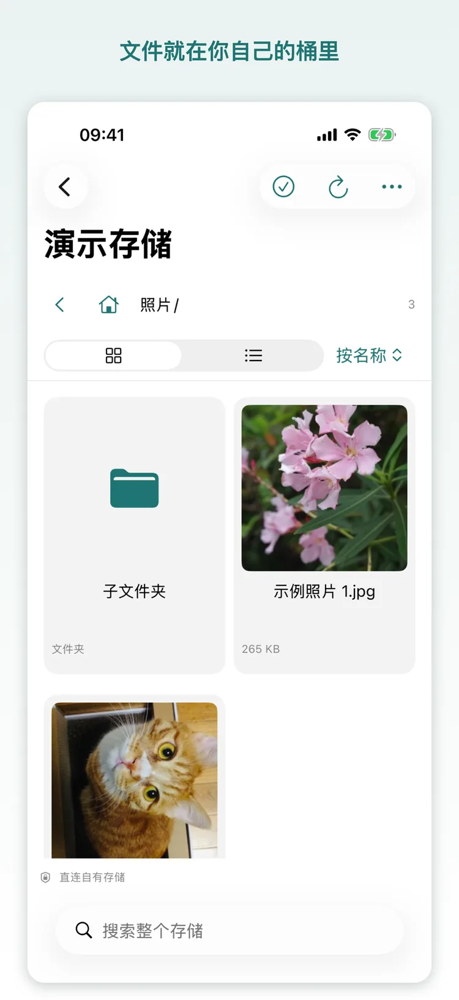
网盘把文件放在别人的服务器上，孤云不是
多数云盘替你做决定：空间多大、速度多少、什么时候涨价。孤云的桶在你自己的云账号名下，所以这些决定也归你。
| 传统网盘 | 孤云 | |
|---|---|---|
| 空间 | 由厂商定价，按档位购买 | 你的桶，按服务商牌价，随时能扩 |
| 速度 | 与会员等级挂钩 | 只取决于你的桶与网络，没有人为限速 |
| 费用 | 订阅制，涨价由厂商决定 | 应用免费；存储与流量按服务商账单，我们不抽成 |
| 服务停运 | 服务关停，文件跟着消失 | 桶还在，换个工具照样能读 |
| 迁移 | 导出限速、格式受限 | 文件本来就是标准对象存储，谁都能读 |
它能做什么
日常要用的都在：浏览、传输、预览、回收站。没有社交，没有推荐，也没有「猜你喜欢」。
浏览与管理
网格与列表两种视图，按名称、修改日期或大小排序；新建文件夹、重命名、复制与搬移。
全存储搜索
搜整个桶，而不只是你正待着的那个文件夹。
上传与下载
从「文件」或「照片」上传，也可以整个文件夹一起传；队列可以暂停与继续，下载可以存到文件夹或「照片」。
iOS 后台传输
200 MB 以内的文件一次交给系统，切换应用或锁屏都会继续完成；更大的文件按系统给的后台时间继续传。
进度处处可见
任意界面角落里有个小胶囊：有几个任务在跑、传到哪儿了、有没有事等你处理，点它进传输页。
用量台账
今天、本月、上月传了多少，可按桶与按设备分开看；蜂窝单独统计，只留在这台设备上。
存储总量
让某个桶被统计一次，应用给出文件数与合计大小；大桶可以分几次点完，结果只留在这台设备上。
归档文件
归档与冷归档文件会被标出；读取前先问是否要解冻——耗时、谁计费、能不能取消，都写在弹窗里。
预览
图片可缩放，视频边下边播，PDF 与文本直接打开，不留下传输记录。
回收站
删除会移进桶自己的回收站目录，那里可以恢复或彻底删除，彻底删除必须先确认。
多台设备
同一个桶在 iPhone、iPad 与 Mac 上都能用；配置可以扫码交给另一台设备，不必手打密钥。
锁
整体或单个存储用面容 / 指纹解锁；锁着时传输照常继续，关闭锁一定先要求一次设备验证。
界面
三个平台同一套设计。点开任意一张可以放大。
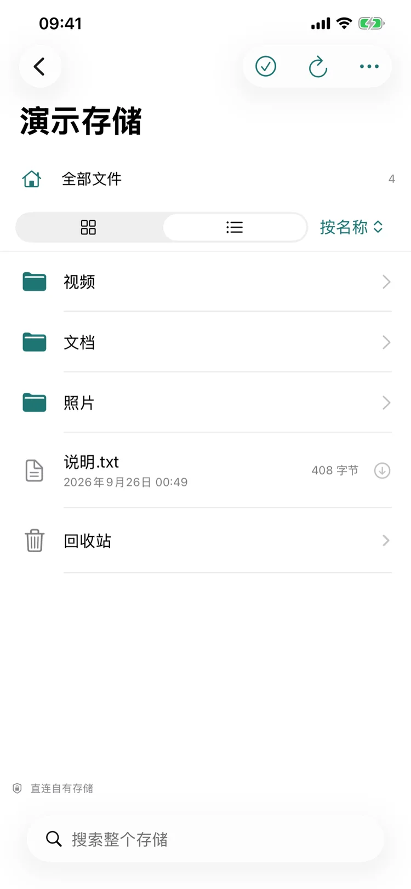
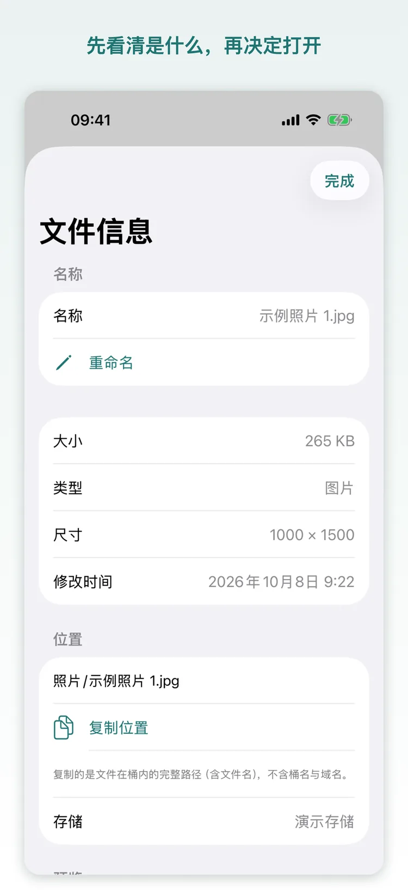
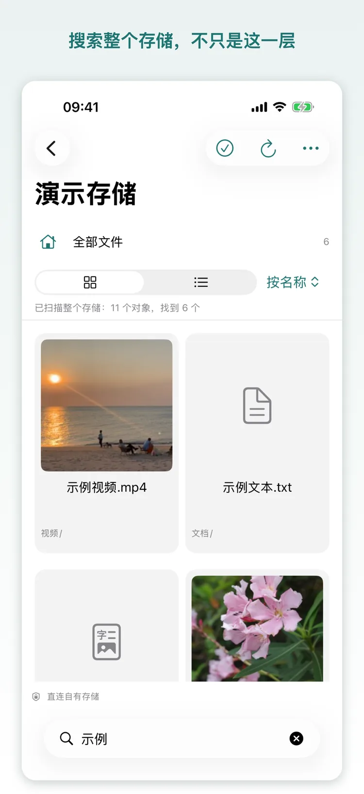
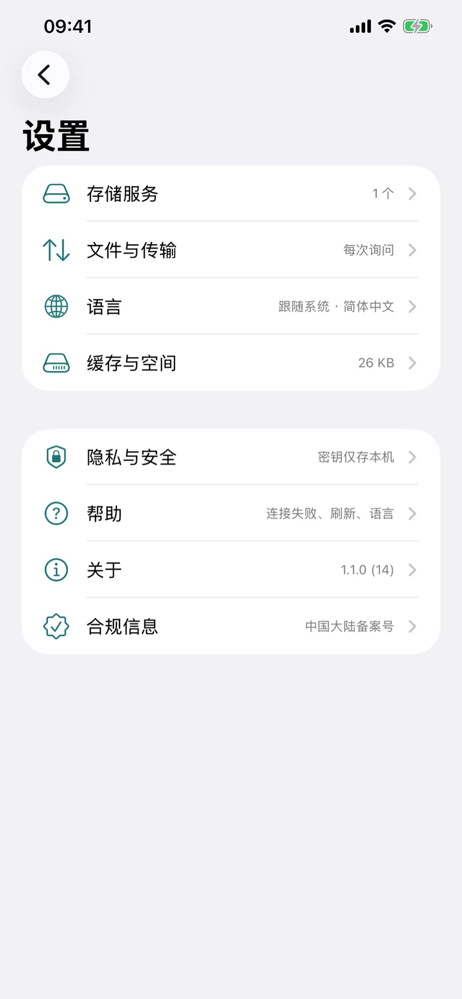
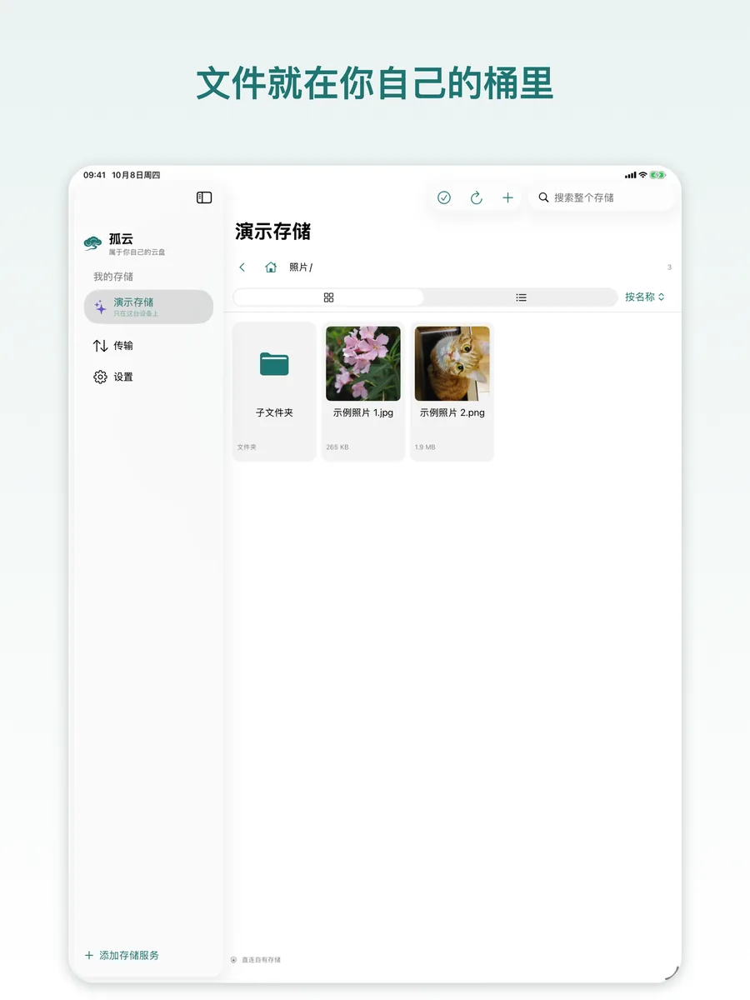
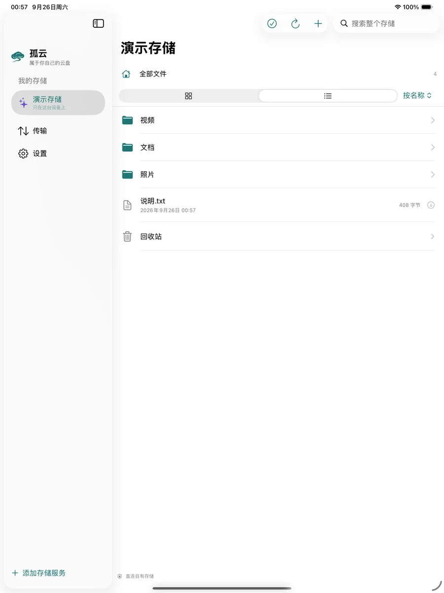
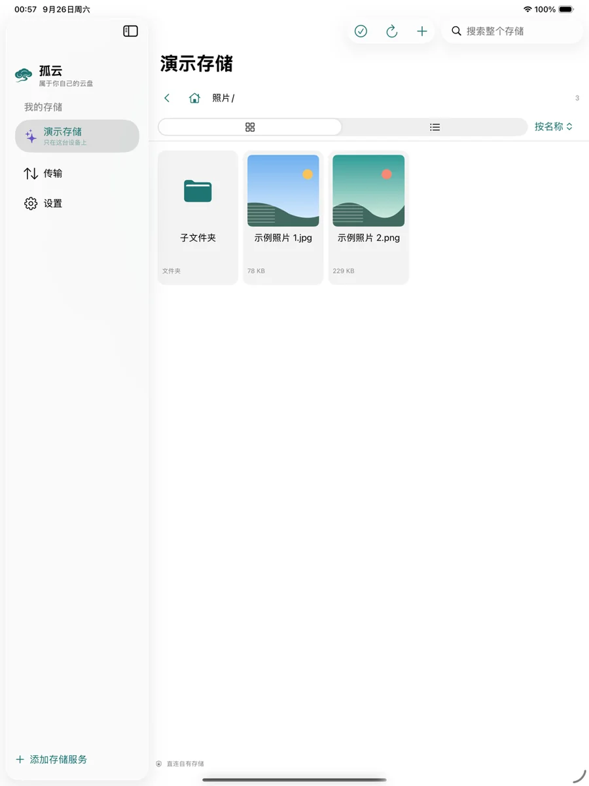
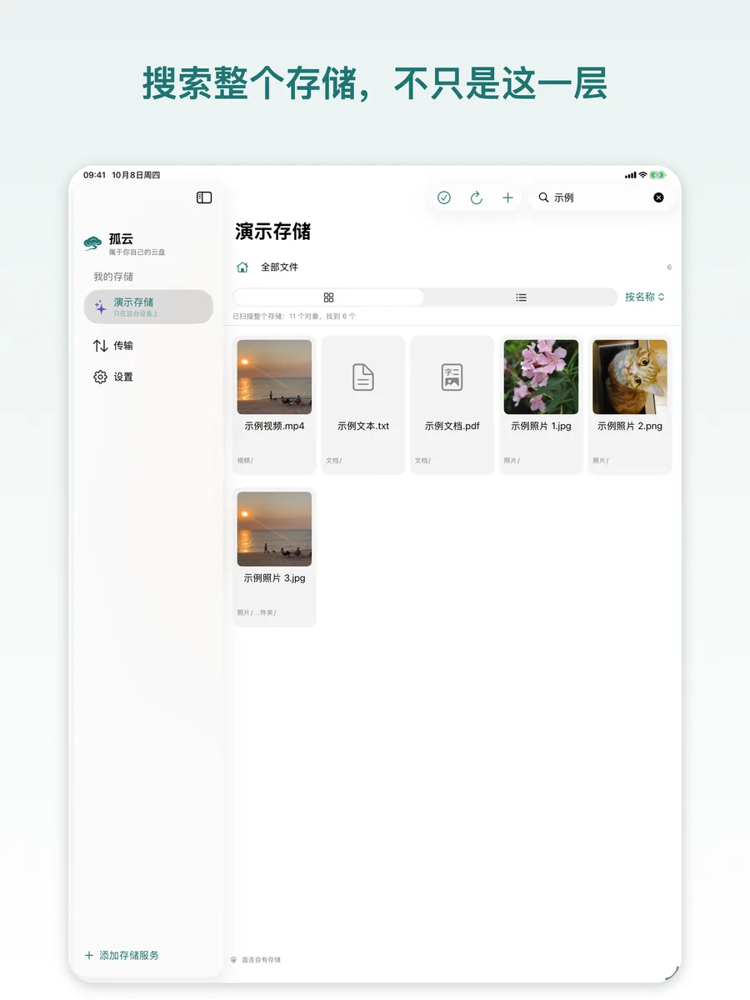
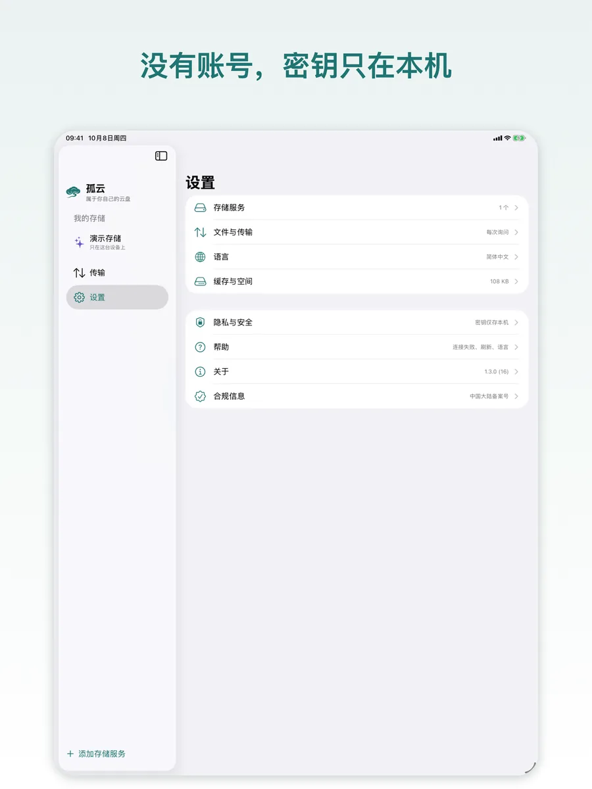
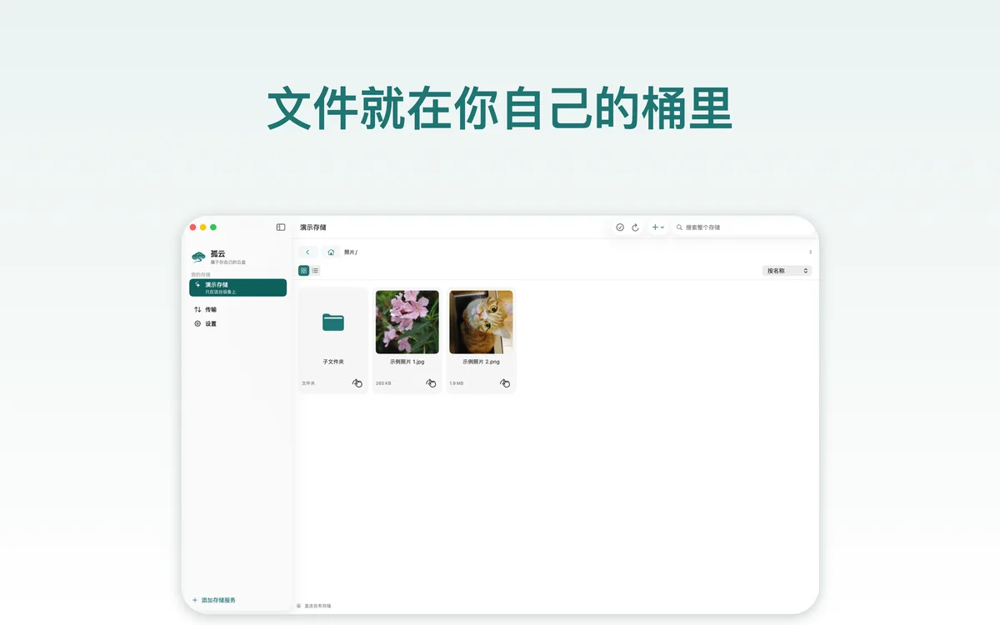
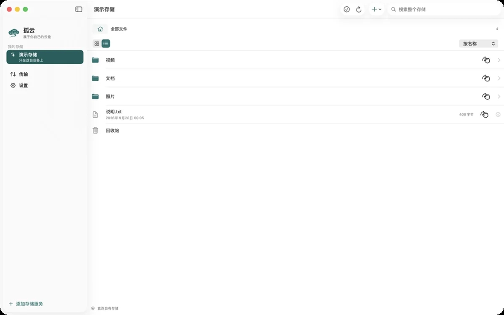
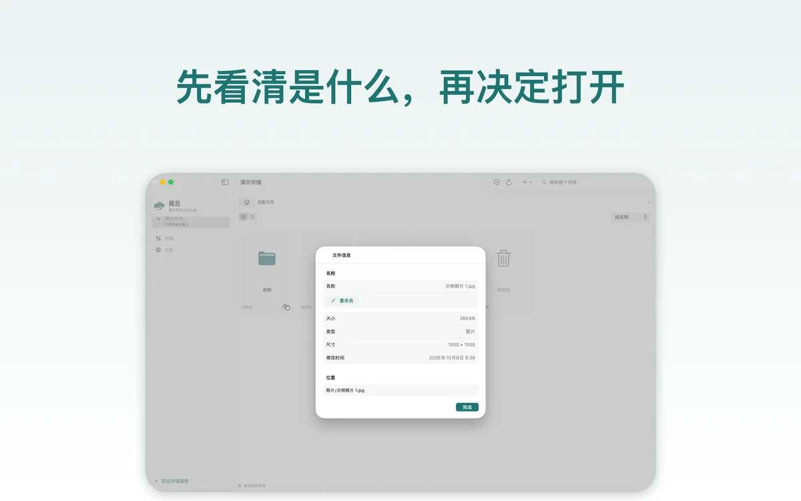
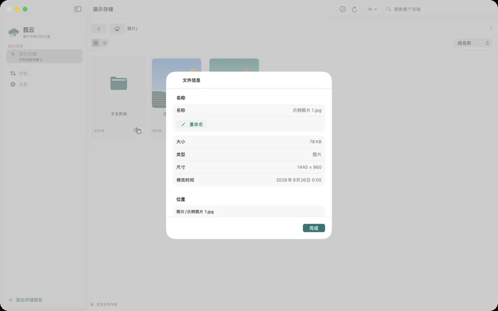
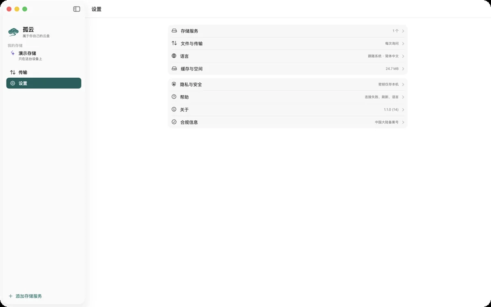
收费：应用免费，只有桶要钱
孤云不提供存储空间，也不从你的存储里抽成。你付给云服务商的那笔钱，就是全部成本。
| 场景 | 存多少 | 每月下行 | 中国区参考月费 |
|---|---|---|---|
| 轻量 | 50 GB | 10 GB | 约 8–11 元 |
| 主力 | 200 GB | 50 GB | 约 36–51 元 |
| 大库 | 1 TB | 100 GB | 约 141–182 元 |
| 冷存 | 2 TB 归档 | 5 GB 取回 | 约 62–68 元 |
按 2026 年 10 月各家官方牌价估算，未含请求费；归档类另有最短存放期与取回费。 价格随时会变，下单前请以服务商官网为准。
先算一笔，再决定
同一份「存 200 GB、每月读 50 GB」的用法，在国内几家之间能差出十几元，海外几家更是差出几倍。 关键不在存储单价，而在下行流量怎么算。
我们做了一份比价：19 家对象存储的存储价、出网价、最低消费与免费额度，以及四个场景的月成本。
打开费用测算工具 ↗开始使用
你需要准备的只有两样：一个桶，和一对只授权这个桶的密钥。
建一个私有桶
在服务商控制台新建一个桶并设为私有。为孤云单独建一个只授权该桶的访问密钥，不要用主账号的密钥。
选服务与地点
在应用里选服务商和地域，Endpoint 与区域会自动填好。你只需填桶名和密钥——腾讯云 COS 还要填桶名结尾的 APPID。
连上就开始用
连接测试只列根目录，成功后密钥存进这台设备的钥匙串。之后浏览、上传、预览都和在本地一样直接。
还没有桶？先用演示存储走一遍
内置的演示存储在本机生成示例照片、一段视频和一份 PDF：不用账号、不用密钥、不联网， 浏览、预览、上传、重命名、复制、搬移、删除与恢复都能试。随时可以移除，不留下任何东西。
| 平台 | iPhone / iPad / Mac，同一份应用覆盖三个平台 |
|---|---|
| 系统 | iOS 17 / iPadOS 17 / macOS 14 及以上 |
| 存储服务 | 阿里云 OSS、腾讯云 COS、七牛、又拍云、Backblaze B2、Cloudflare R2、MinIO，以及任何 S3 兼容服务 |
| 界面语言 | 简体中文、繁體中文、English（在设置里切换，下次打开应用生效） |
| 价格 | 免费。存储与外网流量由你的云服务商按其牌价计费 |
| 名字 | 孤云，取自李白《独坐敬亭山》：「众鸟高飞尽，孤云独去闲」 |
隐私，直说
没有账号，也没有我们的服务器——所以能收集你的东西，一样都没有。
- 只连你填的地址。应用与你的存储通信，别的什么都不连；没有中转服务器，也没有遥测。
- 密钥只在本机。访问密钥存在这台设备的钥匙串里，不上传、不随配置导出，也不经 iCloud 同步。
- 交接码里是明文密钥。只有你主动把存储交给另一台设备时，密钥才会离开本机——把它当密码，只给自己的设备扫。
- 不采集使用数据。没有第三方 SDK，没有分析，没有广告，也没有「匿名统计」。
- 面容 / 指纹由系统处理。这些数据不会离开你的设备，应用只拿到「通过」或「不通过」。
- 锁是界面门，不是加密。它挡的是别人拿起你这台已解锁的设备；文件本身仍按你桶的权限存放。
常见问题
我需要自己有云存储吗？
是。孤云不提供存储空间：你要有一个对象存储桶，以及一对只授权这个桶的访问密钥。支持阿里云 OSS、腾讯云 COS、七牛、又拍云、Backblaze B2、Cloudflare R2、MinIO，以及任何 S3 兼容服务。
还没有的话，先用内置的演示存储把整个应用走一遍，不需要账号、密钥或网络。
应用真的免费吗？
是。没有订阅、没有内购、没有功能锁，也不从你的存储费用里抽成。你要付的只有云服务商那笔账单——存储与外网流量，按它公布的牌价。
阿里云内地的桶为什么连不上？
这不是孤云的限制。2025-03-20 起新开通 OSS 的账号，用默认外网域名访问内地地域的桶，数据类接口（含上传、下载）一律被拒，返回 PublicEndpointForbidden；私有桶、不对外提供链接也不例外，判断依据是 OSS 开通时间而不是建桶时间。
要留在内地地域，就给桶绑定一个已备案的自定义域名，并把它填在 Endpoint 里；或者改用香港 / 海外地域的桶，也可以用 MinIO 自建。
我的文件会经过你们的服务器吗？
不会。没有账号体系，也没有我们的服务器：应用只与你填写的存储地址通信，文件从这台设备直达你自己的桶。
密钥安全吗？
访问密钥只存在这台设备的钥匙串里，不上传、不随配置导出、也不经 iCloud 同步。
唯一的例外是你主动交接：把存储交给另一台设备时，交接码里就是明文密钥，60 秒后失效、只能被领取一次、可随时取消。只给自己的设备扫，若可能被看到就到服务商处轮换密钥。
换手机或重装后要重新填密钥吗？
要。密钥不随 iCloud 同步，这也是它不离开本机的代价。换设备时可以用「扫码添加」从旧设备把整份配置带过去，60 秒内有效；也可以重新填一次。
多台设备之间会自动同步吗？
不会。孤云不是同步工具，也不是自动备份工具：它不会自己在后台启动传输，每一次上传与下载都由你发起、并且能看见结果。
同一个桶可以在 iPhone、iPad 与 Mac 上同时连接，任意一台写入的变更，在别处刷新一下就能看到。
删除的文件去哪了？
进桶自己的回收站目录，可以恢复或彻底删除；彻底删除必须二次确认。
回收站就在你的桶里，所以它占的存储空间和你其他文件一样计费——清空它，账单才会降下来。